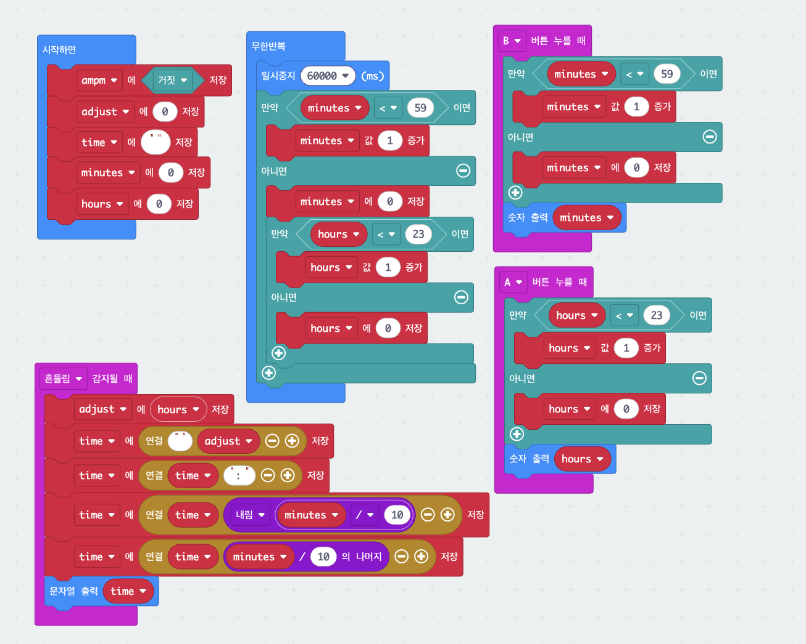

2. 시계
버튼으로 시와 분을 직접 맞춰 놓으면, 흔들 때마다 현재 시각을 9:05 같은 모양으로 보여 주는 시계입니다. 1분(60000밀리초)마다 분을 1씩 올리고, 분이 59를 넘으면 0으로 되돌리면서 시를 1 올리는 조건 중첩이 핵심입니다.
블록 코드
그림을 클릭하면 크게 볼 수 있어요.

준비물
- micro:bit 본체 1대
사용법
| A 버튼 | 시(hour)가 1 늘어납니다 (23 다음은 0) |
|---|---|
| B 버튼 | 분(minute)이 1 늘어납니다 (59 다음은 0) |
| 흔들기 | 지금 시각을 화면에 흘려서 보여 줍니다 |
막힐 때
오래 켜 두면 실제 시간보다 조금씩 느려져요.
이 시계는 60초를 세고 1분 올리기를 반복하는 방식입니다. 한 바퀴 돌 때마다 아주 짧은 시간이 더 걸리는데, 그 차이가 쌓여서 점점 밀립니다. 수업용으로는 괜찮고, 오래 쓸 때는 버튼으로 다시 맞춰 주세요.